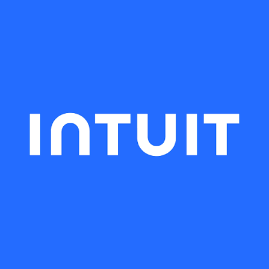
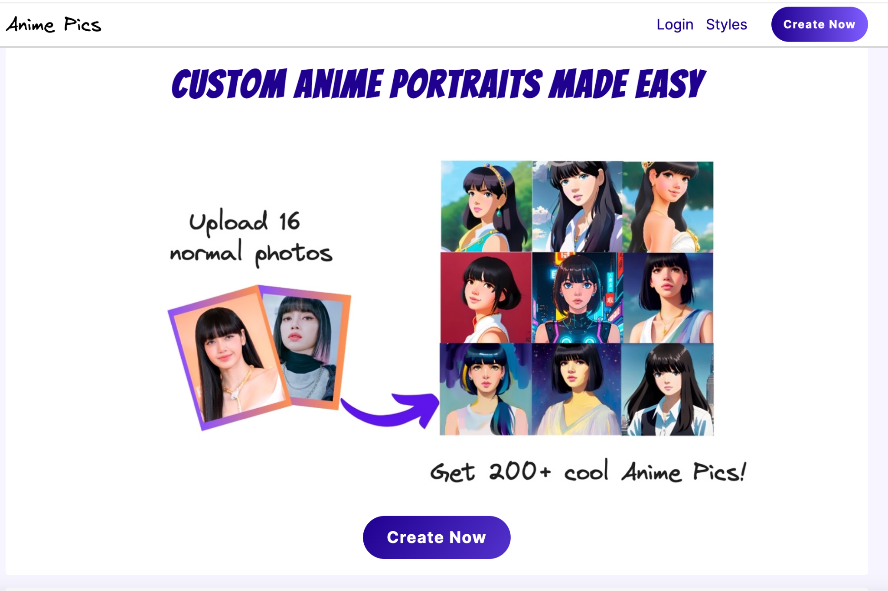
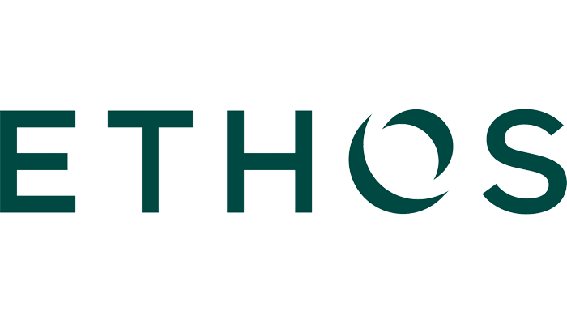

Software engineer - product, platform, applied AI
Eric Kennedy
Product-minded software engineer specializing in applied AI, distributed systems, and backend
infrastructure. I'm strongest in ambiguous problem spaces: turning early product ideas into production
systems, designing the architecture, shipping quickly, measuring outcomes, and owning reliability as usage
scales.
San Diego, CA
714.884.7490
ekeric13@gmail.com
linkedin.com/in/ekeric13
github.com/ekeric13
ekeric13.github.io
1M+Annual customer interactions powered by AI systems I helped build
$25M+Measured business impact from AI matching and optimization
Professional Experience

Intuit
2024 - Present
Senior Software Engineer | intuit.com
-
Virtual Expert Platform: Built AI-powered marketplace, recommendation, and real-time workforce optimization systems for
Intuit's Virtual Expert Platform, powering TurboTax Live, QuickBooks Live, Find a ProAdvisor,
QuickBooks Accountant, and QuickBooks Payroll. During tax peak, 5 days before April 15,
contact-management systems served 4.2M customers across 26k experts.
-
AI matching: Built and led an AI co-pilot matching platform
using transcript analysis, embeddings, and agentic workflows. Scaled AI-driven matching from 0.2% to
36% of contact-center traffic across
1M+ yearly interactions, reduced onboarding from 3-6 months to
under 4 hours, and delivered
$11.4M in 2025 plus $14M in 2026 business impact. Patent filed.
-
Automated routing: Re-architected matching to run fully automated and human-out-of-loop, generating personalized expert
assignments at customer contact time. Built a Kafka stream processor handling 3K+ messages/second;
recovered from a peak-season failure affecting
45% of contact volume and delivered
$3.3M in savings.
-
Agent gateway: Led a hosted AI agent gateway with 20+ domain agents
for onboarding, expert availability, routing rules, enterprise permissions, and contact-center
operations. Built the shared runtime, access control, tool integration, collaborative sessions, and
interfaces across web UI, Slack, Claude Code, and service APIs. Platform
eliminated thousands of hours of manual ops work with
90+ weekly active users.
-
Transcript analysis: Built a Bring Your Own Prompt transcript-analysis platform for arbitrary LLM queries over thousands
of customer conversations, used for tax policy compliance detection with
95.5% precision, QA at scale, and expert skill gap analysis.
-
Observability: Spearheaded obs-as-code (Terraform/IaC for observability) to colocate Splunk-style alert definitions
next to code, improve LLM codegen leverage, and make observability part of the deploy process.
-
Reliability: Diagnosed and fixed a production memory leak that cascaded from heap OOM to consumer-thread exit,
blocking queue deadlock, and pod failure. Root-caused via heap dumps, thread dumps, and Prometheus;
implemented graceful shutdown and rollback handling for Kubernetes SIGTERM to prevent in-flight data
corruption.

AnimePics
2023
Founder | AnimePics project
-
Product: Created a GenAI product that transformed user photos into anime
illustrations using diffusion deep learning and custom models.
-
Frontend: Implemented a mobile-first frontend with TypeScript, Next.js, Tailwind, Zustand, and React Query.
-
Backend: Engineered a Python backend with Starlite, SQLAlchemy, Postgres, S3, Redis, Kafka, and PyTorch GPU
workers for durable orders, media storage, caching, and async GPU job orchestration.
-
Payments and auth: Integrated Cloudinary media management, Stripe payments, Google OAuth, Apple OAuth, passwordless
email, and guest checkout.

Ethos
2018 - 2023
Staff Software Engineer | ethoslife.com
-
Early engineer: Joined pre-launch as Ethos's 3rd engineer and built major frontend and backend systems
that became core company infrastructure. Helped scale Ethos from stealth to
$159.8M 2023 revenue, $50M ARR, and
100+ engineers. Held the highest IC level and mentored ICs into
engineering managers.
-
Infrastructure migration: Migrated ECS to Kubernetes with 100% uptime and introduced Datadog observability; migrated Mongo to
Postgres to improve integrity through schema-on-write and transactional controller logic.
-
Deploy automation: Built deploy automation: GitHub Actions created ECR tags, a React admin UI mapped commits to tags,
a Golang service created deployment PRs, and Argo CD shipped the merge. Reduced deploy time from
about 5 hours to about 5 minutes.
-
Event platform: Created an event-sourcing system that evolved from SQS to custom
Golang Postgres CDC to SNS/SQS with JSON Schema, then Debezium to Kafka with Avro; handled
50,000+ events per day.
-
Owned deep platform and data-system work across service boundaries, persistence, frontend
performance, and production operations:
- Service boundaries: identified monolith domains, wrote ERDs, and created 20+ Kubernetes services.
- Postgres/RDS: owned monitoring, PIT snapshots, reserved instances, Terraform modules, extensions, pganalyze, and Multi-AZ.
- Frontend performance: implemented caching, cross-subdomain CORS/cookies, Nginx asset caching, and redirect reduction.
- Backend performance: added Redis middleware caching and a Kubernetes operator for CDN invalidation on image changes.
- Data modeling: shipped no-downtime migrations and refactored polymorphic relations to exclusive arc.
- Query optimization: fixed an O^n payments query from 4 hours to 5 seconds.
- Incident response: served as final escalation point for major on-call incidents across the platform.
Curology | Fullstack Engineer
2017 - 2018. Built an in-browser photo editor with canvas, D3, RxJS, and mobile drag and drop; hundreds of photos created weekly. Created photo metadata APIs for product and analytics.
hiQ Labs | Lead Frontend Engineer
2015 - 2017. Built paginated employee directory, AWS upload/download, and KPI dashboard pages; improved builds with Webpack, Babel, PostCSS, minification, and gzip.